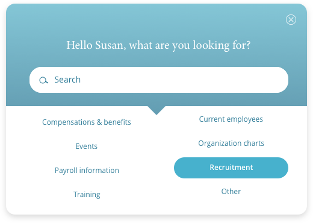
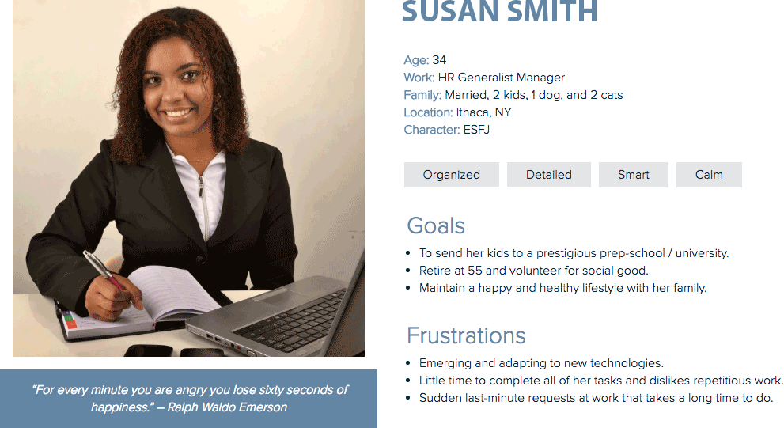
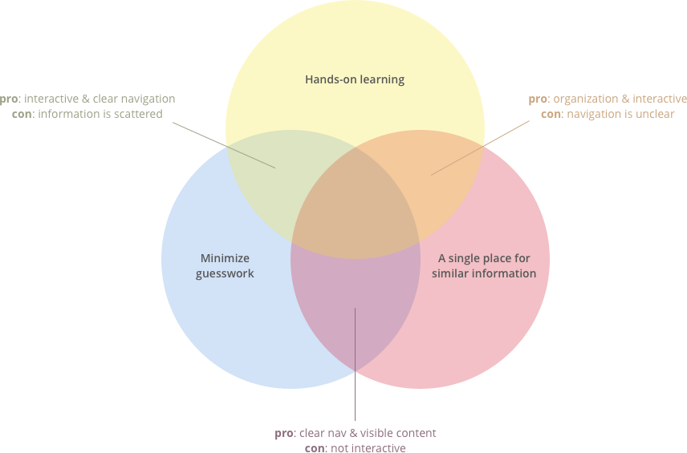
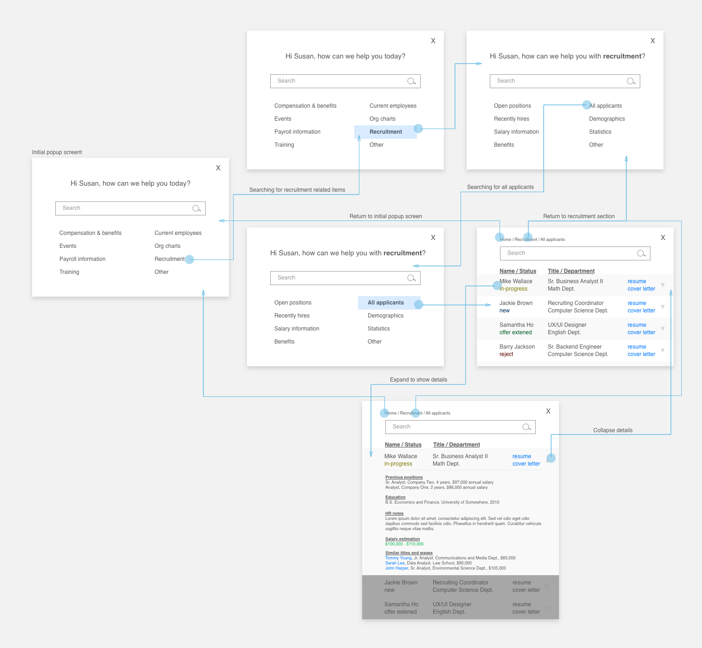
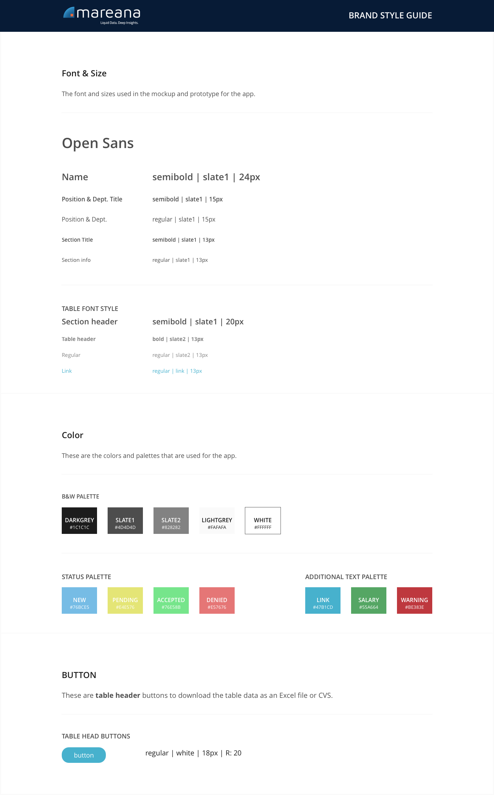

Designing a popup tutorial for new users
My design process for an interactive guide
At a Glance
Company
Mareana
Role
Lead UX Designer
Responsibilities
Led contextual interviews
Conducted user research
Created wireframes and high-fidelity prototypes
Conducted usability tests
Tools
Sketch
InVision
Adobe Photoshop
About the Project
Mareana is a big data company. Its core technology, qSuite, provides data mining services with qFind, qArt, and qSci, and qSync. qSync allows users to locate, extract, merge, and publish data from unstructured sources to analyze the best option for its purpose.
Expanding qSync into human resources
Mareana has a strong presence in the medical equipment sector and aims to introduce qSync into human resources. However, they currently have limited industry knowledge and competitive insights.
However, they currently have limited industry knowledge and competitive insights. Additionally, the user interface for qSync lacks an intuitive user experience for its users to quickly adapt to the product.
Helping new users adapt
The technology and design goals and expectations from this client was to uncover insights from HR professionals, identify their pain-points, and design an interactive guide for users to show how qSync's technology could be leveraged.
User Research
My research demographic primarily consisted of HR professionals from within Cornell University. Cornell's HR workers were the most accessible and representative of a larger HR organizations with multilevel layers.
Understanding the users
I conducted contextual interviews with three HR professionals from the Samuel Curtis Johnson Graduate School of Management. Some of the questions included:
What are your challenges with current HR technologies?
What aspect of your work would you like to streamline?
How do you best adapt to new software programs?
After the interviews, I organized the participants' responses into similar groups to easily identify similar categories and overarching themes. From there, I created a persona and constructed the user journey.
Creating an affinity diagram
Creating a persona
Creating a user journey
Susan wants to make a fair wage offer to an applicant based on their experience, education, and other employees in the similar job functions without having to manually pulling data from different reports. With qSync, Susan can quickly search for the applicant's name and find a recommended wage offer suggested by qSync based on Susan's desired metrics and criteria.
Understanding the problem objective
In the end, I had clearer insights into the users' daily workflow and recognizing how current technologies are not addressing their main needs. I defined the key elements and problem objective as the following:
Users want an interactive, real-time, hands-on tutorial that shows them how to use the new software, that can be applied to their own work.
Ideation
With the problem definitions in mind, the ideation process activity was to explore possibilities and decide on the best solution to help new users quickly familiarize themselves with qSync.
Brainstorming possible solutions
With the problem definitions in mind, the ideation process activity was to explore possibilities and decide on the best solution to help new users quickly familiarize themselves with qSync. Based on the information from the interviews, overwhelming responses from participants highlighted three areas to consider for a design solution:
| Potential solutions | Possible outcomes | Venn color |
|---|---|---|
| "How-to" videos | Users may not pay attention | Purple |
| Online user guide aids | Users may not know what to search for or what to read | Green |
| In-person tutorials | Time consuming to teach & not all information is retained | Orange |
| Interactive popup aid | Popups can be ignored and seen as annoying | All colors! |
Rapid Prototyping
After deciding on creating a popup aid for qSync, I constructed the popup's architecture and user flow. For each screen, I noted what would most likely be needed as the user is going through the interaction and how the screen could potentially be displayed.
Once the information architect and layouts were drafted, I created simple wireframes to demonstrate to the stakeholders the user flow and interactions.
Constructing the information architect in low-fi

Wireframing with Sketch
Iterating through designs
I started designing the popup once the wireframes were finalized. Initially, I wanted the popup to be bold and colorful so the first iteration had a white text on a blue gradient background. To show different states, the search bar would change to white when the area is active and when the suggested options is hovered, it would be highlighted with a lighter blue hue.
1st iteration
After I conducted a couple of user tests, the results indicated the following:
The color was nice but it was too bold.
The search box in neutral state did not stand out.
The suggested options did not look clickable.
I redesigned the popup based on the feedbacks that were given from the user tests. The 2nd iteration of the popup design had a different background layout for a more visible search bar and a triangle that indicates to user that the options below were clickable.
2nd iteration
Finalizing the prototype
In addition to the popup, I also designed a sample layout of a table that displays information for all the applicants and how their information would be shown when their name is selected. This feature allows the user to quickly access and view any applicant's information.
Final Prototype in InVision
Future steps
The popup model is created to be very flexible and its uses can be tailored to any industry to on-board new users. The contextual interview questions were designed to also be easily personalized when interviewing professionals outside of the HR industry. This will enable Mareana to tackle new industries in the future and effortlessly teach new users the power of qSync.
Learning from this experience
This was my first product design project that I worked on independently from beginning to end. Some of the challenges included:
Arranging for contextual interviews.
Gathering design feedback and communicating with stakeholders.
Working around a short time frame.
After encountering these challenges, I learned that when working a large project with a limited tim frame, it is important to keep the following in mind:
Start early when arranging for meetings with other influencers on a project like stakeholders and interviewees.
Allow ample time during braintorming sessions for different ideas and inspirations to manifest.
Work with an agile mentality when iterating and prototyping to quickly learn from user testings.
Handing off to developers
I based the color scheme off of Mareana's current brand colors and the hues from within their qSuite dashboard. However, there was a lack of consistency of font size and palette colors so I narrowed the guide down to a few main components to give the qSync a more uniformed look and for the developers to reference when they build the popup feature.
UI Kit
